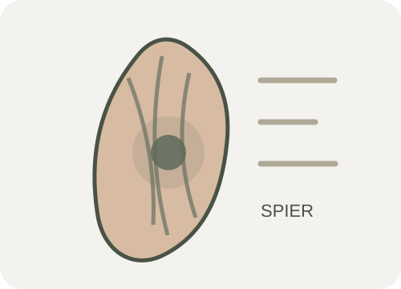
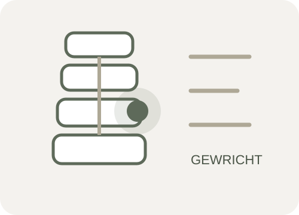
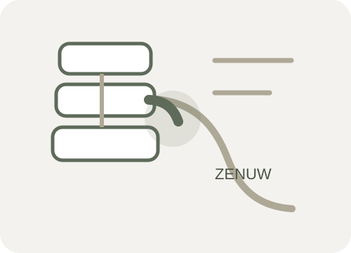

Wat is rugpijn?
Rugpijn is een verzamelnaam voor pijn, stijfheid of bewegingsbeperking in de rug. De klacht kan lokaal blijven, maar ook uitstralen naar bil of been. Soms ontstaan tintelingen, een doof gevoel of krachtsverlies. De intensiteit van pijn vertelt niet automatisch hoeveel schade er aanwezig is: slaap, stress, belasting, conditie, verwachtingen en eerdere ervaringen kunnen allemaal invloed hebben op hoe de klacht wordt ervaren.
Bij veel mensen is geen enkele structuur als dé oorzaak aan te wijzen. Dat noemen we aspecifieke lage rugpijn. Dit betekent niet dat de klacht niet echt is. Het betekent dat herstel meestal het beste wordt gestuurd door functie, belastbaarheid en het klachtenpatroon te beoordelen, in plaats van alleen naar één anatomische afwijking te zoeken.
Waar kan rugpijn vandaan komen?
Spieren, gewrichten en zenuwen kunnen vergelijkbare klachten geven. Tijdens het onderzoek zoeken we daarom niet naar een snelle etikettering, maar naar het patroon dat het beste aansluit bij uw klachten en beperkingen.

Myogeen: spieren en belasting
Spiergerelateerde klachten kunnen ontstaan na een plotselinge inspanning, langdurig dezelfde houding, vermoeidheid of een verandering in trainingsbelasting. De pijn is vaak lokaal en kan gevoelig zijn bij aanspannen of drukken.

Arthrogeen: gewrichten en beweging
Gewrichten in de lage rug of het bekken kunnen bijdragen aan pijn en stijfheid. Het patroon kan veranderen bij draaien, strekken, lang staan of na een periode van inactiviteit.

Neurogeen: zenuw en uitstraling
Prikkeling van een zenuwwortel kan pijn in het been, tintelingen, gevoelsverandering of krachtsverlies veroorzaken. De plaats van rugpijn alleen is onvoldoende om dit vast te stellen; neurologisch onderzoek is dan belangrijk.
De bron is niet altijd één structuur
Rugklachten zijn vaak een combinatie van gevoelig weefsel, veranderde belasting, beschermend bewegen en verminderde belastbaarheid. Daarom stemmen we de behandeling af op het hele klinische beeld.
Wanneer hulp zoeken?
Een afspraak bij de fysiotherapeut
Overweeg onderzoek wanneer de pijn uw werk, slaap, sport of dagelijkse activiteiten beperkt; wanneer klachten terugkeren; wanneer u onzeker bent over bewegen; of wanneer herstel uitblijft ondanks aanpassing van belasting.
Neem direct medisch contact op
Zoek spoedig medische hulp bij nieuw verlies van controle over blaas of darmen, gevoelloosheid rond kruis of zitvlak, snel toenemend krachtsverlies, ernstige rugpijn na groot trauma, of rugpijn met koorts en duidelijke ziekteverschijnselen.
Andere signalen, zoals onverklaard gewichtsverlies, een voorgeschiedenis met kanker, langdurig corticosteroïdgebruik of pijn die sterk progressief is, vragen eveneens om beoordeling door huisarts of specialist. Eén signaal betekent niet automatisch dat er iets ernstigs speelt, maar de combinatie en het beloop zijn belangrijk.
Hoe onderzoeken wij rugpijn?
We beginnen met uw verhaal: wanneer ontstonden de klachten, wat beïnvloedt ze, welke activiteiten zijn moeilijk en wat wilt u weer kunnen? Vervolgens kiezen we alleen de tests die voor uw klachtenpatroon relevant zijn.
- 01
Vraaggesprek en screening
We bespreken klachtenverloop, gezondheid, belasting, slaap, werk, sport, eerdere episodes en signalen die aanvullende medische beoordeling kunnen vragen.
- 02
Bewegings- en functieonderzoek
We bekijken relevante bewegingen, houdingen, kracht, coördinatie en activiteiten die uw klachten uitlokken of juist verminderen.
- 03
Neurologisch onderzoek indien nodig
Bij uitstraling, tintelingen of krachtsverandering testen we onder meer spierkracht, gevoel, reflexen en mechanische gevoeligheid van zenuwweefsel.
- 04
Uitleg en gezamenlijk plan
U krijgt een begrijpelijke werkhypothese, realistische verwachtingen en een plan dat past bij uw doelen en beschikbare tijd.
Behandeling van rugpijn
Een effectieve behandeling is meestal actief en doelgericht. We kiezen interventies op basis van uw onderzoek, niet omdat één techniek bij iedereen zou werken.
Uitleg en zelfmanagement
Begrijpen wat veilig is, hoe u belasting doseert en hoe u reageert op een tijdelijke toename van pijn.
Oefentherapie
Gericht op mobiliteit, kracht, uithoudingsvermogen, controle en vertrouwen in dagelijkse of sportieve bewegingen.
Hands-on technieken
Kunnen tijdelijk helpen om pijn of stijfheid te verminderen en beweging makkelijker te maken, altijd gekoppeld aan actief herstel.
Dry needling wanneer passend
Bij een relevante spiercomponent kan dry needling ondersteunend zijn. Lees meer op onze pagina over dry needling in Haarlem.
Opbouw van werk en sport
We vertalen oefeningen naar tillen, zitten, hardlopen, krachttraining of andere activiteiten die voor u belangrijk zijn.
Evaluatie
We volgen niet alleen pijn, maar ook functie, vertrouwen en deelname. Als herstel anders verloopt dan verwacht, heroverwegen we de aanpak.
Heb ik een MRI nodig?
Bij aspecifieke lage rugpijn wordt routinematige beeldvorming niet aanbevolen. MRI-beelden laten regelmatig veranderingen zien bij mensen zonder pijn, zoals discusuitstulpingen of tekenen van slijtage. Zo’n bevinding moet daarom altijd worden geïnterpreteerd naast uw verhaal en lichamelijk onderzoek.
Een MRI kan wél zinvol zijn wanneer er aanwijzingen zijn voor een specifieke aandoening, bij progressieve neurologische uitval, of wanneer de uitslag naar verwachting invloed heeft op een medische beslissing. De huisarts of specialist bepaalt of en wanneer beeldvorming nodig is.
Hoe lang duurt herstel?
Het hersteltempo verschilt per persoon. Veel nieuwe episodes verbeteren in de eerste weken, maar schommelingen zijn normaal. Bij langdurige of terugkerende klachten duurt het vaak langer om belastbaarheid, vertrouwen en deelname volledig op te bouwen.
We spreken vroeg af wanneer we evalueren. Zo weet u of het plan effect heeft en wanneer aanpassing of overleg met de huisarts passend is.
Veelgestelde vragen over rugpijn
1. Moet ik rust houden bij rugpijn?
Langdurige bedrust wordt meestal afgeraden. Rustig blijven bewegen en activiteiten tijdelijk aanpassen helpt doorgaans beter. Een korte pauze kan prettig zijn, maar probeer regelmatig van houding te wisselen.
2. Is wandelen goed voor rugpijn?
Voor veel mensen is wandelen een geschikte manier om actief te blijven. Begin met een haalbare duur en bouw geleidelijk op. De reactie in de uren erna is belangrijker dan een tijdelijke lichte toename tijdens het lopen.
3. Mag ik werken met rugpijn?
Vaak wel, eventueel met tijdelijke aanpassingen in duur, houding, tillen of pauzes. Volledig stoppen is niet altijd nodig. We kunnen helpen een realistische opbouw te maken.
4. Heb ik een MRI nodig?
Meestal niet bij gewone lage rugpijn. Beeldvorming wordt vooral overwogen wanneer er aanwijzingen zijn voor een specifieke oorzaak of wanneer de uitslag een medische beslissing kan veranderen.
5. Kan fysiotherapie helpen bij een hernia?
Veel mensen met een hernia herstellen zonder operatie. Fysiotherapie kan helpen bij bewegen, opbouw van belasting, uitleg en het volgen van neurologische symptomen. Bij toenemend krachtsverlies is medische beoordeling belangrijk.
6. Kan dry needling helpen?
Wanneer spieren duidelijk bijdragen aan de klacht, kan dry needling tijdelijk pijn of spanning verminderen. Het wordt bij AlianzaFysio alleen gebruikt als onderdeel van een breder actief behandelplan.
7. Hoeveel sessies heb ik nodig?
Dat hangt af van klachtenduur, beperkingen, hersteltempo en doelen. Na het eerste onderzoek bespreken we een eerste behandelperiode en een duidelijk evaluatiemoment.
8. Betekent pijn dat ik schade maak?
Niet automatisch. Pijn is een beschermend signaal en kan gevoeliger worden door meerdere factoren. We helpen u onderscheid te maken tussen normale reacties op opbouw en signalen die aanpassing vragen.
9. Komt rugpijn vaak terug?
Terugkerende episodes komen voor. Dat betekent niet dat uw rug zwak is. Herkennen van vroege signalen, actief blijven en een passend plan voor belasting kunnen helpen om toekomstige episodes beter op te vangen.
10. Heb ik een verwijzing nodig?
Meestal niet. U kunt doorgaans rechtstreeks een afspraak maken via Directe Toegankelijkheid Fysiotherapie. Wanneer medische beoordeling nodig is, adviseren wij contact met uw huisarts.
Patiëntinformatie gebaseerd op Nederlandse eerstelijnsadviezen, waaronder de NHG-Standaard Aspecifieke lagerugpijn. Deze pagina vervangt geen individuele medische beoordeling.